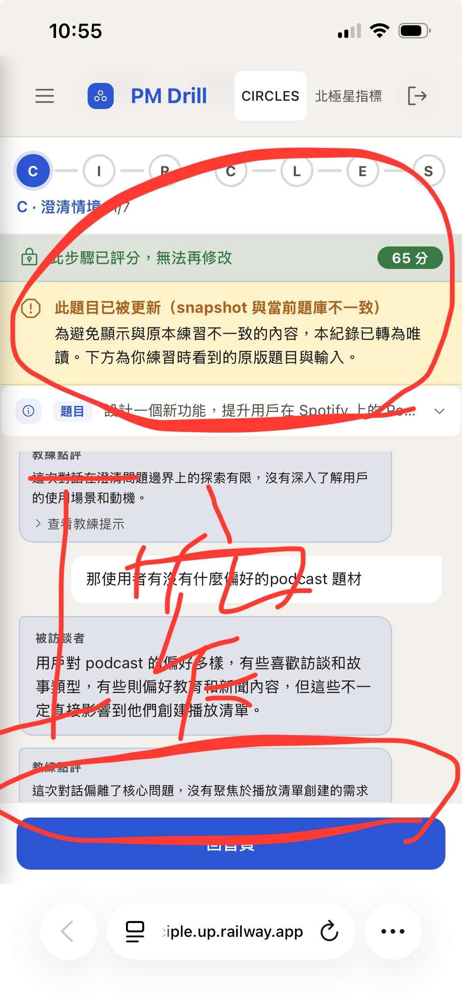
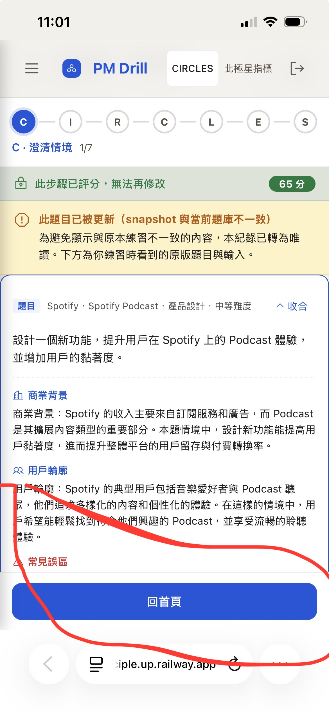
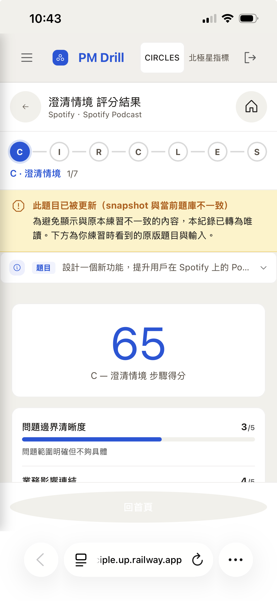
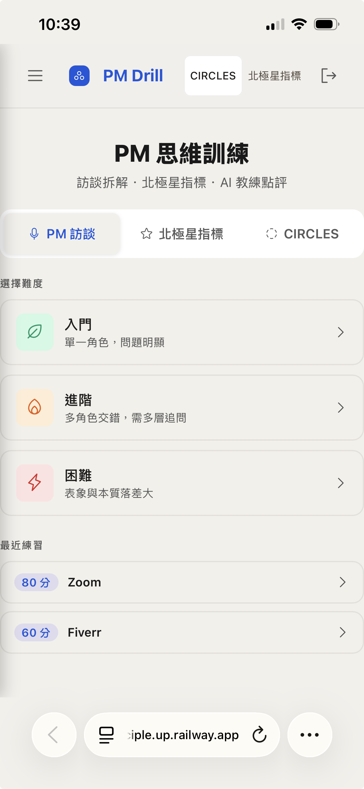

v4：用 真實 production HTML 結構（progress-track / progress-step + line / progress-current）— 修 v3 progress bar 直排 bug。題目卡和對話在同一 scroll container，padding-bottom: 88px 確保最後內容不被 sticky bar 蓋住。




.stale-locked-bar ~44px（原本 ~120px → 省 76px）padding-bottom: 88px（覆蓋 sticky bar 高度）→ 最後 bubble + 題目展開都完整可見；題目 chip 與 chat 在同一 scroll container 內app.js:4367 stale 用 id="circles-score-home"，被 style.css:4541 設成 border-radius:50% + 灰底（icon-btn 樣式）circles-stale-home → 恢復 primary 藍底白字buildDrillCompleteEncourageHtml early return（避免「再練一次」打到當前題庫）.stale-locked-bar（無 lock 分數時 pill 不顯示）+ .stale-action-barapp.js:3188 / 3950 stale-home handler 呼叫 navigate('home') → 落到 legacy 入門/進階/困難navigate('circles')。navigate 偵測 circlesSession=null 即清 state + render renderCirclesHome（題目選擇牆）public/style.css 加 .stale-locked-bar + .stale-action-bar 兩個 classapp.js:3873-3909 phase 2 stale 分支：用 .stale-locked-bar 取代 locked-banner + stale-banner；.stale-action-bar 同列放 上一步 + 回首頁；chat-body 加 padding-bottom: 88pxapp.js:2965-2975 phase 1 stale 同樣處理（合併 banner + sticky 雙鍵）app.js:4367 stale 分支 button id circles-score-home → circles-stale-homeapp.js:4293 buildDrillCompleteEncourageHtml() stale 時 early returnapp.js:4455 加 #circles-stale-home click handlerapp.js:3188 / 3950 stale-home handler navigate('home') → navigate('circles').phase2-desktop max-width: 920px; margin: 0 auto 把 navbar / progress / chat-body 一起壓到 920 居中，左右各 ~180px beige bg 浪費.circles-body-centered 居中 920px。Apply to phase 1 / 2 / 3，stale 與非 stale 都遵守.phase2-desktop / .phase3-desktop wrapper 取消 max-width；中段內容包新 wrapper .circles-body-centered 套 max-width: 920px; margin: 0 auto
D-1 設計確認：頂部 chrome（navbar / circles-nav / progress / qchip）全寬；body 內容包 .circles-body-centered 套 max-width: 920px 居中。
Apply to 所有 phase 1/2/3 desktop，stale 與非 stale 共用此規則。